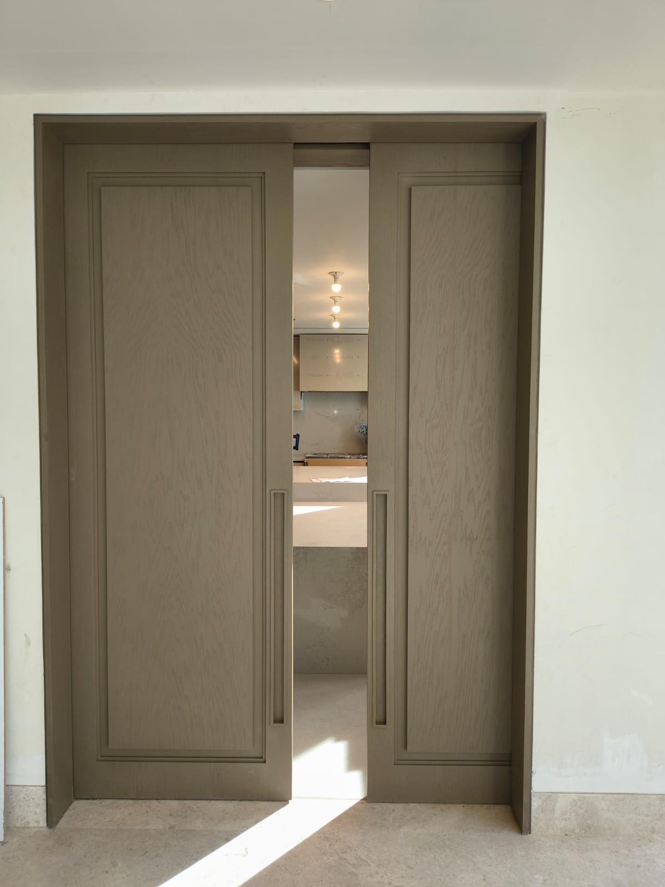
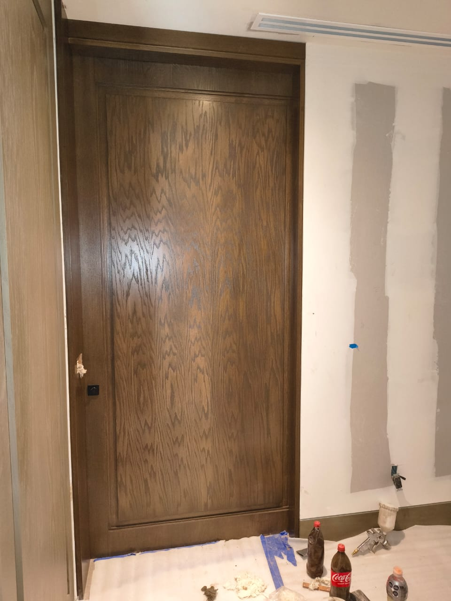
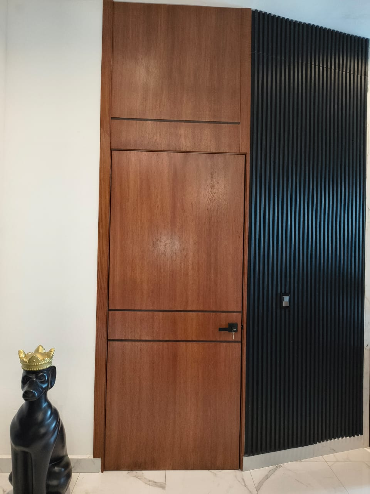
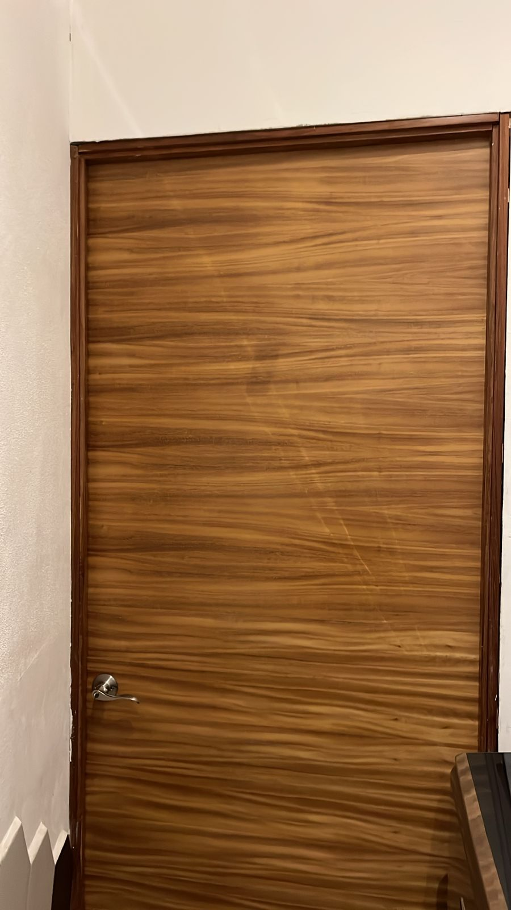
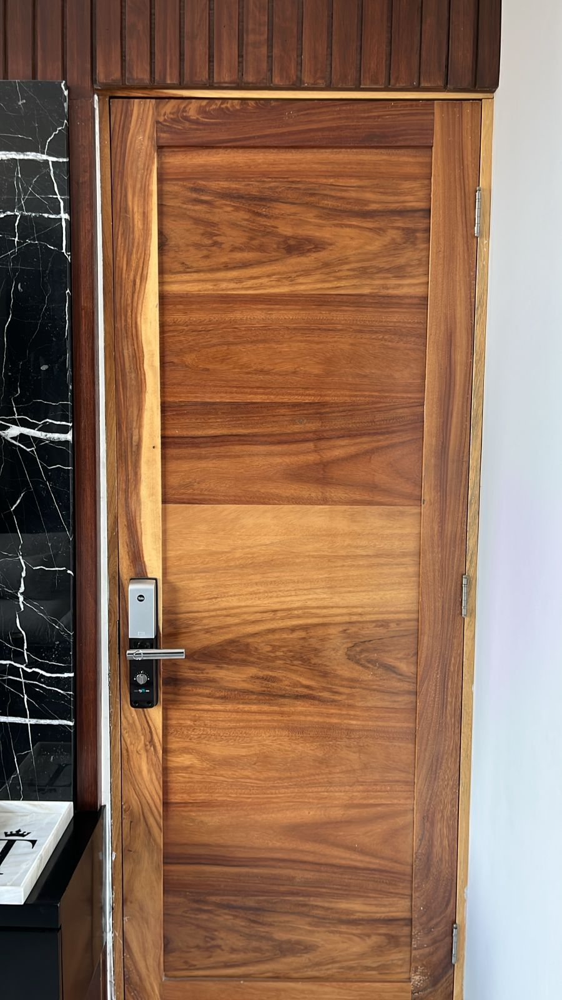
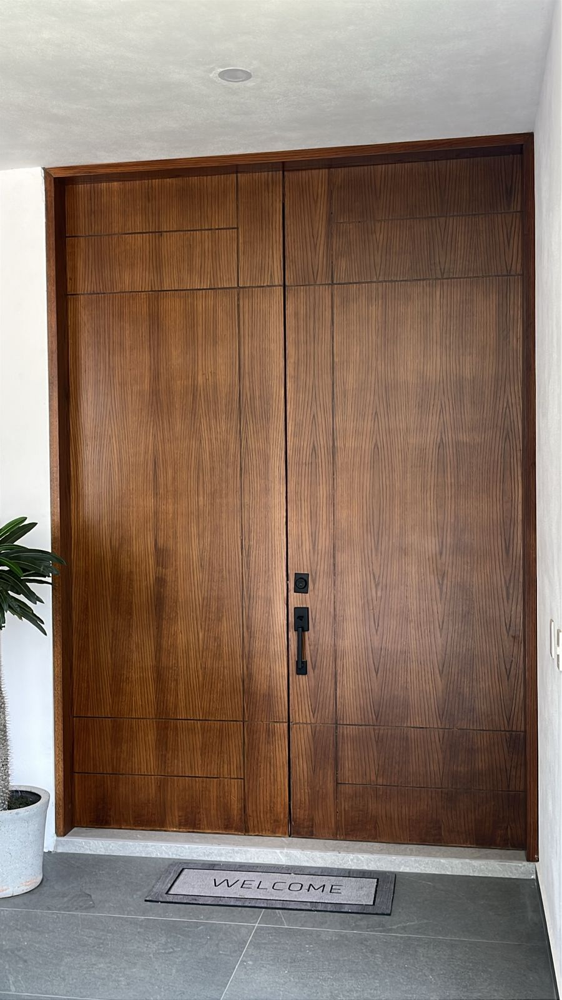
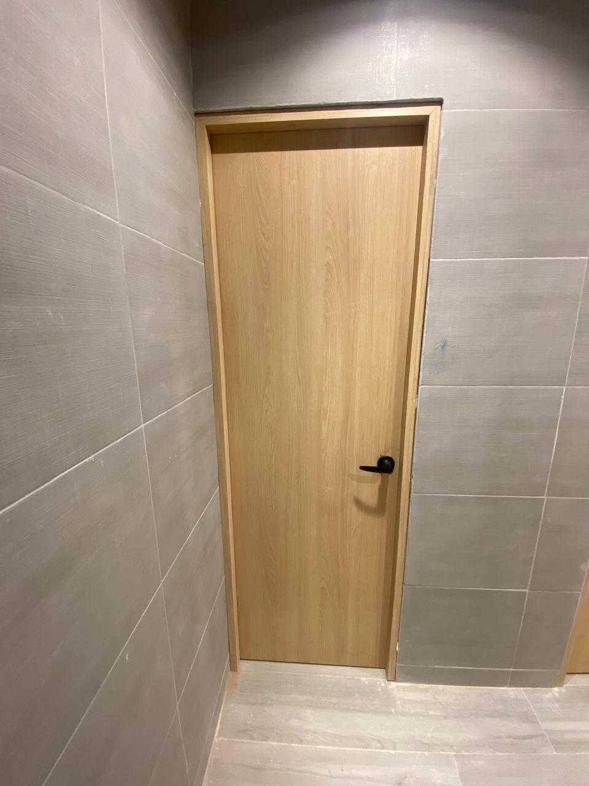

Puertas pocket corredizas
Par de puertas corredizas tipo pocket con paneles en acabado madera y jaladeras embutidas, diseñadas para aprovechar mejor el espacio.
Puertas fabricadas a medida con distintos diseños, acabados y sistemas de apertura.

Par de puertas corredizas tipo pocket con paneles en acabado madera y jaladeras embutidas, diseñadas para aprovechar mejor el espacio.

Puerta corrediza tipo pocket en acabado encino, con panel central y diseño sobrio para espacios interiores.

Puerta de nogal de formato alto, integrada visualmente hasta el techo para conseguir un acabado continuo y contemporáneo.

Puerta en nogal con veta horizontal y marco flotado, diseñada para lograr una apariencia limpia, cálida y elegante.

Puerta de nogal con composición de paneles horizontales y cerradura digital, combinando seguridad con un diseño moderno.

Acceso principal de doble hoja en acabado madera, con diseño simétrico de gran formato y herrajes en color negro.

Puerta interior de líneas limpias en acabado encino claro, con manija negra y estilo minimalista.